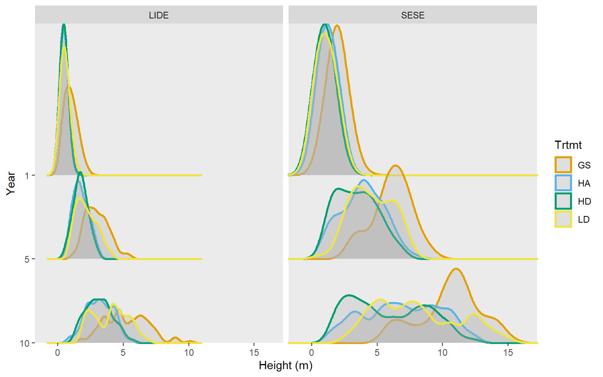
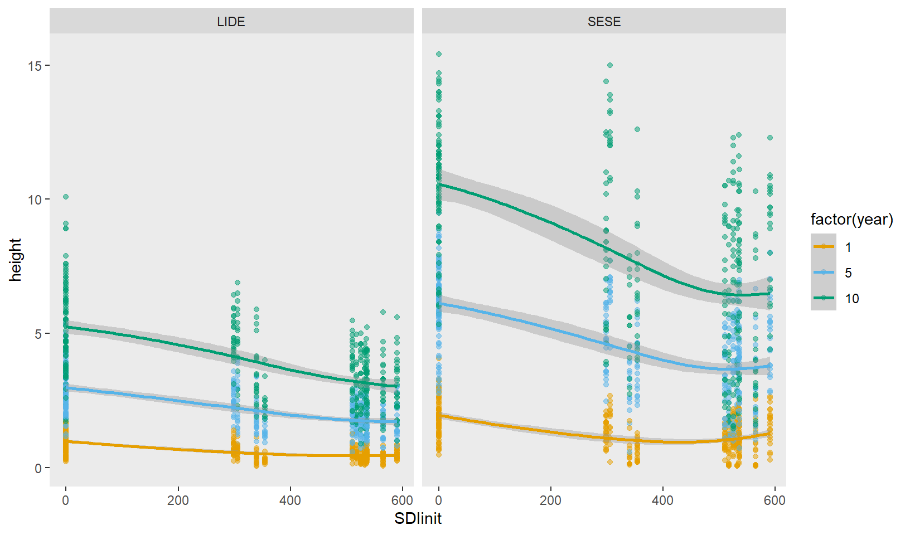
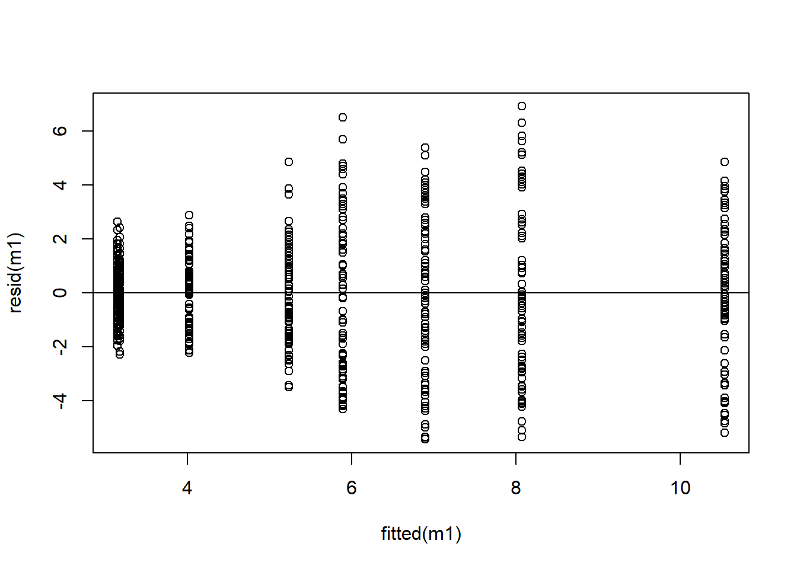

suppressWarnings(suppressPackageStartupMessages(library(tidyverse)))library(ggridges)library(ggokabeito)sprouts <- readxl::read_excel("../data/Sprouts10yr.xlsx")set.seed(743)slice_sample(sprouts, n =4) |> knitr::kable()
Site
Plot
Trtmt
Tree
Species
HT1yr_m
HT5yr_m
HT10yr_m
HTI1-5yr
HTI5-10yr
DBH10yr_cm
LCBH10yr
CR10yr
HD10yr
SDIinit
AggregatedYN
ResidRWonClumpYN
HT10rank
Waldo North
2
GS
285
LIDE
1.72
3.55
6.30
0.4575
0.550
NA
NA
NA
NA
0.00
0
NA
4
Waldo South
4
GS
13
SESE
1.14
3.11
6.00
0.4925
0.578
6.6
0.60
0.900000
90.90909
0.00
0
0
21
Whiskey Springs
4
HA
1904
LIDE
0.29
0.96
1.94
0.1675
0.196
NA
NA
NA
NA
536.33
1
NA
24
Whiskey Springs
2
HD
1405
SESE
1.83
5.21
9.20
0.8450
0.798
12.5
0.01
0.998913
73.60000
509.90
0
0
6
The data is in a wide format, variables are as follows:
Table 6.1: Descriptions of variables in dataset.
Variable
Description
Site
One of four sites where treatments were replicated. Sites were located on similar slope positions, but across a range of aspects.
Plot
There were 4 plots at each site and each was randomly assigned a treatment
Trtmt
Treatemnt type: GS = group selection, which is basically a small clearing, LD = low density–fewer trees remaining; HD = high density–more trees remain and they are dispersed; HA = high density aggregated–more trees remain and they are grouped into clumps.
Tree
Unique sprout ID within Site, Plot, and Species
Species
SESE = coast redwood, and LIDE = tanoak.
HT1yr_m
Sprout height one year after treatment.
HT5yr_m
Same as above, but for year 5
HT10yr_m
Same as above, but for year 10
HTI1-5yr
Height growth between years 1 and 5, (4 growth periods)
HTI5-10yr
Height growth between years 5 and 10 (5 growth periods)
DBH10yr_cm
Diameter at breast height in cm at year 10. Only collected for redwood
LCBH10yr
Live crown base height (height to first live branch) at year 10. Only collected for redwood.
CR10yr
Crown ratio (live crown length / total height) at year 10, only for redwood
HD10yr
Unknown.
SDIinit
Stand density index of plot immediately after treatment.
AggregatedYN
Indicator for treatment HA.
ResidRWonClumpYN
Unknown.
HT10rank
Trees species specific height ranking within plot.
I’m going to change some variable names to make them more ergonomic
Test for treatment effects on redwood height and diameter at year 10 and in comparison to other years
Explore treatment effect on competition between redwood and tanoak
Produce a model for sapling height at year 10 as a funtion of harvest intensity (initial SDI)
Explore differences in height increment over multiple remeasurements
6.3 Visualize data
6.3.1 Tree heights
The following figures reveal possible trends in the raw data.
6.3.1.1 Species/treatment/year
Figure 6.1 reveals fine, species specific differences between treatments and general trends over time. It shows that over time, LD and GS treatments have more taller trees than the other treatments, with GS having the most. This is true for both redwood and tanoak. Additionaly, for redwood it appears that HA may have taller trees than HD, at least in year 10.
Figure 6.2 shows the same information as before, but is arguably more easier to look at. There is a generall increasing trend in heights as follows:
HD < HA < LD < GS
seems to suggest that redwood are taller across all treatments and years, but the GS treatment is the only one that provides a clear advantage to redwood.
Across all treatments, it is also interesting to note that over times, the height distributions, especially for redwood, seem to becoming more multi-modal and more widely distributed. This could be due to site or plot effects, or to microsite (within plot) effects, but it is not immediately clear why this diverging performance should be so apparent with redwood and not tanoak.
Code
# Function to convert heights or increments from multiple years to long format# to facilitate analysis and plotting of that variablelengthen_data <-function(data, var) { pref <-switch(var, ht ="(ht)", ht_inc ="(ht_inc)") suf <-"(\\d+)" str_to_match <-paste0(pref, suf)pivot_longer(data,matches(str_to_match),names_to =c(".value", "year"),names_pattern = str_to_match,names_transform =list(year = as.integer) ) |>relocate(year, matches(paste0(pref, "$")), .after = spp)}sprouts |>lengthen_data("ht") |>ggplot(aes(ht, fct_rev(factor(year)), color = treat)) +scale_y_discrete(expand =c(0, 0)) +scale_x_continuous(expand =c(0, 0)) +coord_cartesian(clip ="off") +geom_density_ridges(alpha = .3, size =1) +facet_wrap(~spp) +labs(x ="Height (m)", y ="Year") +scale_color_brewer(palette ="Set2")

Figure 6.1: Height distributions for tanoak and redwood over time for each of four treatments. Treatments GS and LD have higher proportions of taller trees. Years refers to number of years after treatment.
Figure 6.2: Similar to Figure 6.1, but with an emphasis on differences between speceis responses across treatments. Comparisons are made for each year. The GS treatment appears to favor redwood response the most, but all treatments show redwoods are taller than tanoak. Years refers to number of years after treatment.
6.3.1.2 Species/year/SDI
Figure 6.3 shows that above around 400 SDI, tree heights level off. It also implies a steady decrease in height from 0 to around 400 SDI. The strength of the relationship appears to be increasing over time, particularly for redwood.
`geom_smooth()` using method = 'loess' and formula = 'y ~ x'

Figure 6.3: SDI vs HT for both species, across measurement years.
6.3.1.3 Species/site/plots
Lets see what the variability among sites and plots looks like, I’ll focus on year 10 only.
Figure 6.4 reveals some differences between sites, particularly for redwoods. Waldo North tends to have larger redwoods and Camp 6 has a large proportion of smaller redwoods.
We can see in Figure 6.5 that there seems to be differences among plots beyond site differences and treatment differences. We should expect plots to capture a portion of the variance. Most notable is the plot level difference between redwood and tanoak. For redwood, the large ammount of within plot variability combined with the between plot variability obscures the treatment effect. If you squint, there appears to be a similar overall pattern between redwood and tanoak repsonse to treatment, but it appears they respond differentially to certain plots.
Figure 6.4: Distribution of heights at year 10 at each site for two species. Slabs are normalized by sample size to reflect the raw data, plotted as dots below.
Figure 6.5: Same as for Figure 6.4, but for each plot (Site/treatment interaction). Grouped by treatment.
6.3.2 Height increments
Height increments contain similar information as heights, but allow us to compare directly between years.
Figure 6.6 shows that across treatments and species, height growth slows down in the second period (years 5-10). This is more true for redwood but it starts with more rapid growth than tanoak. In the most crowded treatment (HD), redwoods height increment has become slower than tanoaks in the second period. Also, in the second period, the high density, aggregated treatment appears to have slightly higher (or equal) average growth increment, which is not completely expected.
Figure 6.6: Variations in annual height growth increment between the first and second measurement periods (years 1-5, and 5-10, respectively).
6.4 Nesting
Our data though are nested, we have:
Sites
└─ Plots
└─ Trees
└─ Observations
Each Treatment is represented by one site/plot combination. Each site belongs to each treatment and vice versa. I think the terminology here is that Sites and treatments are crossed.
Currently, plot is only unique within site and tree is only unique within site, treat, and spp. It will be more convenient if plot and tree are globally unique identifiers. This makes the nesting structure implicit, and we can simplify our model syntax.
In addition to characterizing redwood growth response, we would also like to accurately describe differences between redwood and tanoak. This is probably best accomplished by including species in the model, and modeling the difference directly.
because of our multiple grouping variables, model complexity can grow quickly, especially when considering how covariates interact with grouping variables, which lead to random slope models
I’m also wondering what it means to include a categorical variable as a random slope (on the LHS of the random parts). Michael Clark explores this scenario, with some simpler data.
In any case, following the pattern of data summaries above, I’ll start by modeling to detect treatment differences in tree height.
I’ll start with the simplest model that I’m willing to look at: a treatment/species interaction for only year 10. This model is not that bad, the residuals indicate some heteroskedasticity. It has a moderate r-squared (0.55). It doesn’t account for non-independence due to nesting structure of our data though.
m1 <-lm(ht ~ treat * spp, data =filter(d, year ==10))plot(fitted(m1), resid(m1)); abline(h =0)

How do the other measurement years compare.
Code
library(modelsummary)ms <-lapply(c(1, 5, 10), \(x) lm(ht ~ treat * spp, data =filter(d, year == x)))modelsummary(ms)